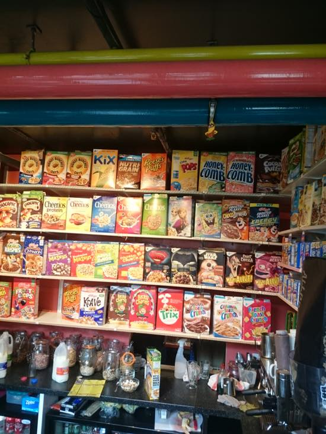
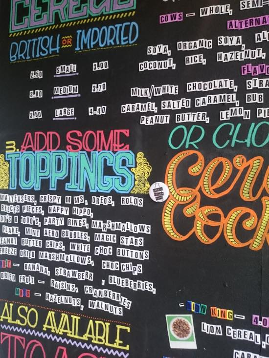
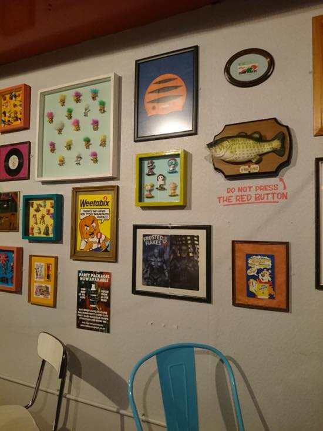
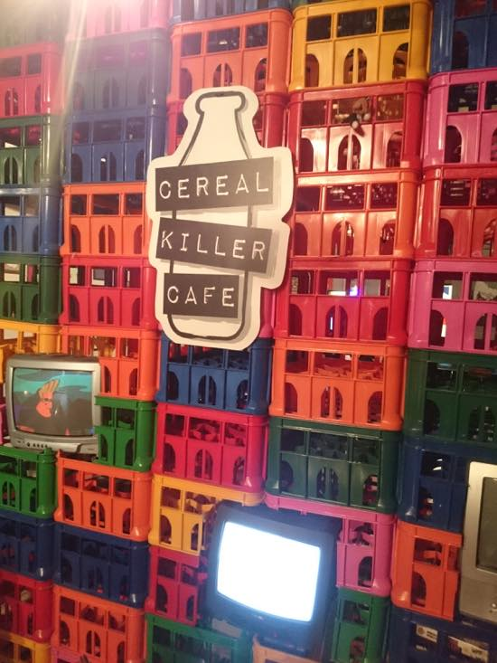
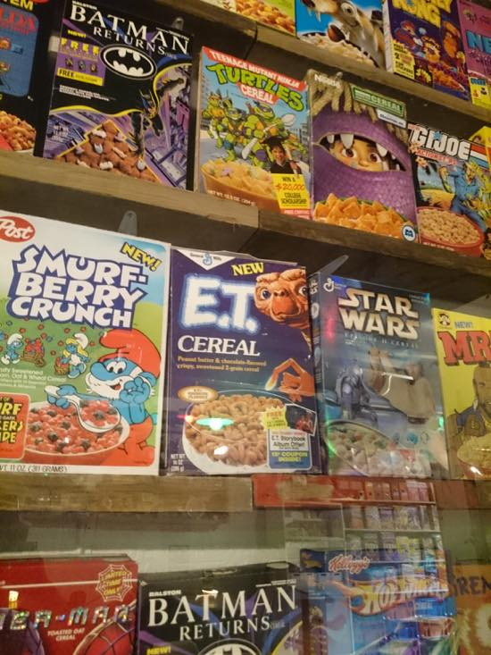
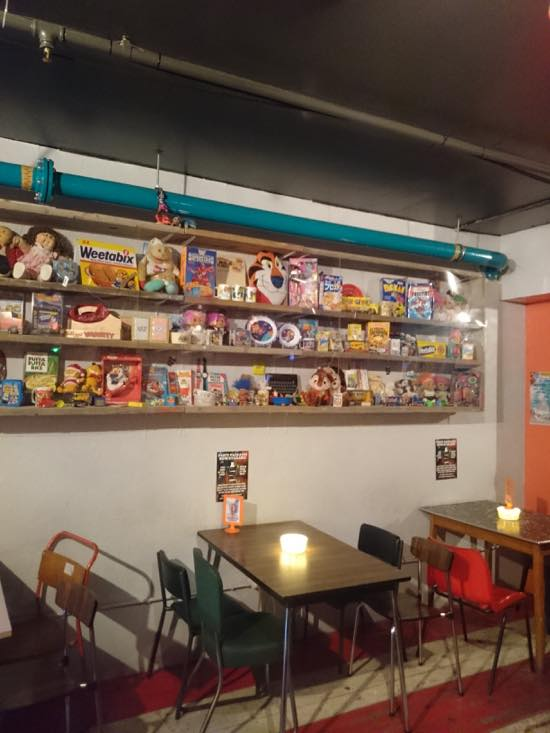
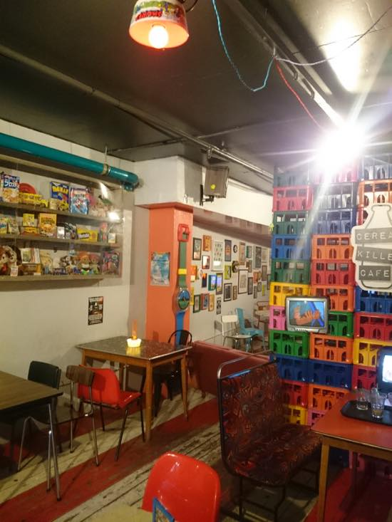

시리얼 카페입니다.
제가 이 카페를 알게된 계기가 좀 웃긴데
작년 9월쯤 M군에게 한 기사 링크를 받았습니다:
https://www.theguardian.com/uk-news/2015/sep/27/shoreditch-cereal-cafe-targeted-by-anti-gentrification-protesters
런던 쇼디치(브릭레인)에서 폭동이 일어났는데 메인타켓? 피해가 쇼디치에 있는 이 시리얼 킬러 카페였거든요.
'die hipsters' 같은 메세지 받으면서 시리얼 볼에 £4.40 이나 받는건 넘 비싸다 - 가 이유인거같은데
기사보고 이뭥미 싶었더랬죠 ^^;;
이날 먹은건
Sticky monkey £4.60
toffee crisp cereal / chopped banana / whipped cream / crushed digestive / toffee sauce / banana milk
입니다. 비디오 막판에 광속으로 사라지는 장면을 볼수있... ^^
브릭레인 / 캠던 두군데 가게가 있는데
캠던마켓 안에 있는 카페 댕겨왔습니다 :)
다음에는 브릭레인 카페 가보고싶네요 ^^
웹사이트: http://www.cerealkillercafe.co.uk/
인스타그램: https://www.instagram.com/cerealkillercafe/
트위터: https://twitter.com/CerealKillerUK
*웃긴 기사 하나더:
http://www.bbc.co.uk/news/uk-england-hampshire-35579159
술취한 사람이 도로한복판에 트리케라톱스 두고감 ㅋㅋㅋㅋㅋㅋㅋㅋㅋㅋㅋ






